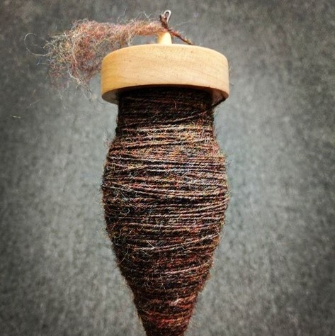
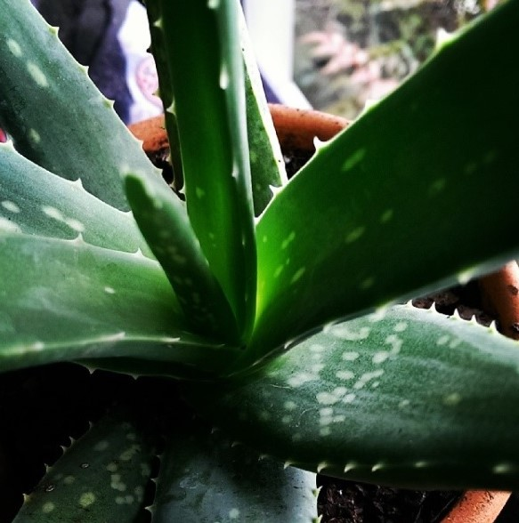

About Me
Let me tell you a few things about myself.

Words to live by:
It is important to draw wisdom from different places. If you take it from only one source it becomes rigid and stale.
~ Uncle Iroh, Avatar: The Last Airbender
You can use logic to justify almost anything. That's its power. And its flaw.
~ Captain Kathryn Janeway, Star Trek: Voyager
Take chances, make mistakes, get messy.
~ Ms. Valerie Frizzle, The Magic School Bus
Thing 1: Yarn Crafts
Crochet? Knitting? Spinning yarn? I can do it all.
The person responsible for my love of crocheting, knitting, and all fiber-related crafts is my grandmother. She loved to crochet, and was able to make each of her grandchildren an afghan when they were born.
I remember watching her when I was a young child and being entranced by the swift and rhythmic motions of her hands. I would watch her for hours, sitting perfectly still, as she worked on a project for one of my future cousins.
During my teenage years I decided that it was time to learn the skill that my grandmother so lovingly enjoyed. After a few videos, courtesy of YouTube, I was off and running. My first project, while structurally sound, was a bit of an eye sore. But I loved every moment that I spent working on it.
Fast forward to today, and that spark of inspiration from my childhood has grown into roaring fire. My skill set and technique have improved tremendously from where they started, although there is always room for improvement. The scale and complexity of the projects that I take on have drastically increased as well. It has taken years of patience and perseverance, but I have definitely seen a return on my investment.
Thing 2: Gardening
Like Hobbits, I too have a love for all things that grow.
When the season is right, and the space is available, there is no place I'd rather be than spending time in the garden. Any item that is high on my bucket list is to one day have a garden large enough to stock my pantry with home canned goods.
Not only do I plan on having a garden filled with delicious edible goodness, I also envision a home surrounded with the vibrant beauty of flowers and lush vegetation. A particular favorite of mine is P. quinquefolia. Virginia Creeper is a fast growing vine that has large decorative foliage. In the fall, it turns a blazing shade of red.
My flora fascination doesn't end with the outdoors. My home is adorned with a plethora of
leafy friends. A significant portion of my collection is comprised of what I have termed
memory plants
. Whenever there is a significant event or place in my life, I like to
take a cutting from nearby and root that cutting. I have ivy from my sisters wedding, a mystery
vine from my brothers wedding, and a small shrubbery from the bush that grew outside the office
of my first job in Utah. And when the time is right, I will plant the lily bulbs that used to
grow in my great-grandmothers flower beds.
Thing 3: Game Night Champion
Be it board, card, or party games.... I will destroy you.

I am an avid lover of all tabletop and party games. If I had a top-10 list, it would have to include (in no particular order):
- The Tales of Arabian Nights
- Smallworld: Undergorund
- Tsuto of the Seas
- Forbidden Island
- Bananagrams
- Hand & Foot
- Splendor
- Munchkin
- Quarriors
- Bang!
My favorite part about playing games is getting to know the people you are playing with. While I do enjoy winning, I would much rather have an enjoyable experience while losing than a contentious experience while winning.